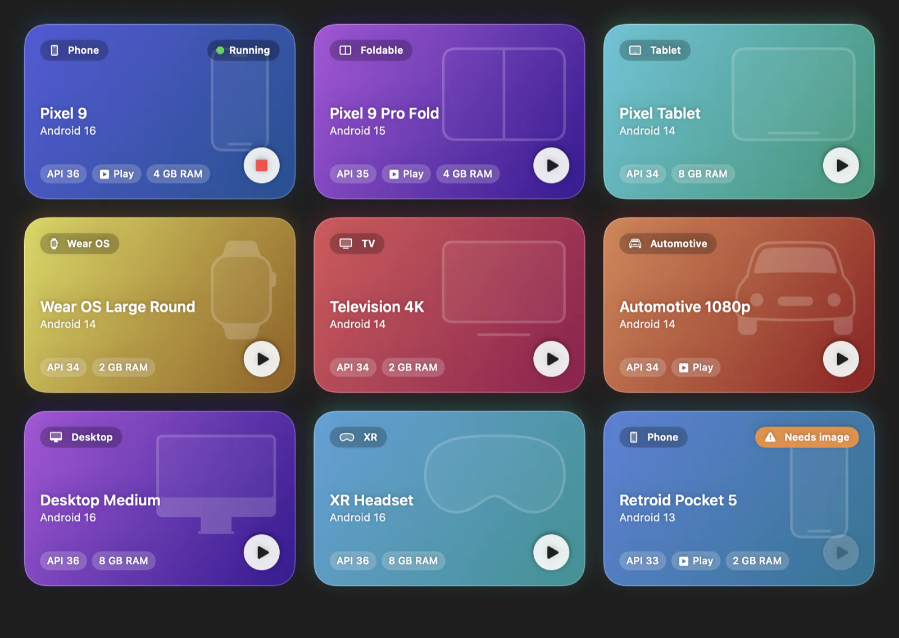
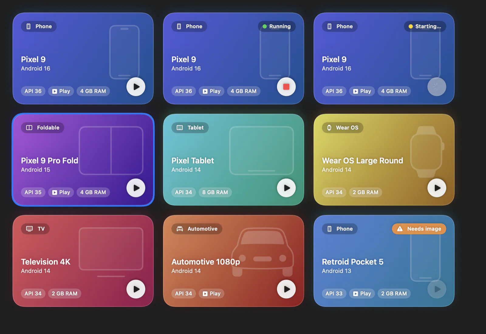
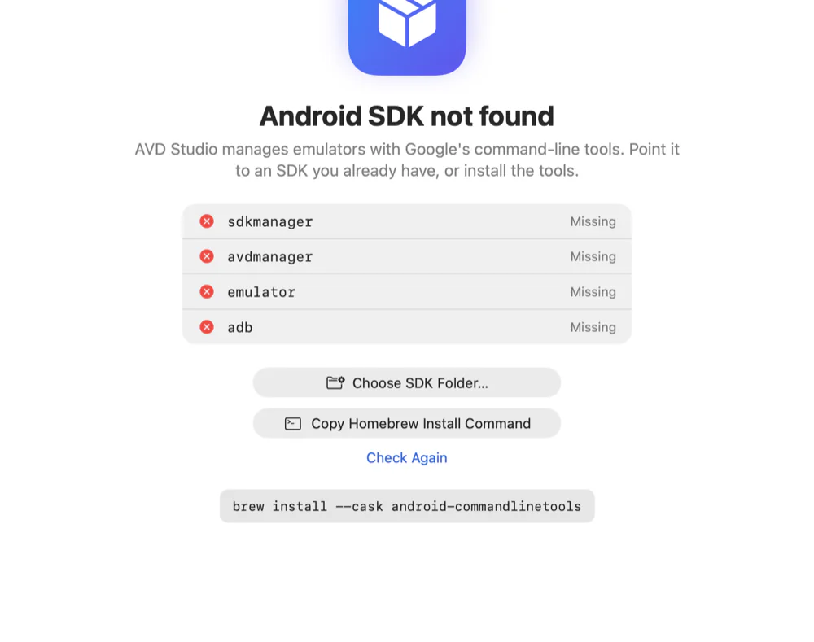

Download the app
Available nowThe app as a DMG on GitHub Releases.
Open GitHub ReleasesAVD Studio is a native Mac app for your Android Virtual Devices. See them as a colourful grid, start one with a double-click, and keep the terminal for when you want it.
AVD Studio is in early development. Releases are published on GitHub.

No AVD Manager dialogs and no remembered commands. These features exist today.
Each virtual device is a card with its own gradient, so a phone never looks like a foldable. API level, RAM and Play Store support sit right on the card.
The sidebar sorts devices into phone, foldable, tablet, Wear OS, TV, automotive, desktop and XR. Type a few letters to find one.
Double-click a card to start or stop it. Each device also offers cold boot, wipe data and start (it asks you to confirm first), and show in Finder.
A menu bar item lists every device with a play or stop button next to it, creates new ones, and shows a dot when an emulator is running.
AVD Studio follows your Mac's appearance, or you can pin it to light or dark in Settings.
Choose the Android SDK folder and the folder where your virtual devices live, for example on an external SSD. A Diagnostics screen shows what is missing.
avdstudio lists, creates, starts and deletes devices, checks your setup and installs what is missing. Most commands can print JSON for scripts.
AVD Studio can tell you when a new version is out, show the release notes and download the DMG with checksum verification. Turn the check off in Settings.
Pick a type, a hardware definition and one of your installed Android versions, name it, and choose RAM, storage and an SD card. Like Android Studio, Google Play, the GPU and the device frame are switched on for you.
No SDK yet? AVD Studio installs the command-line tools, Java, the emulator and the system images your devices need through Homebrew, after you accept Google's licence. No Homebrew? You get the same steps as a script for Terminal.
Choose from ten icons, a phone, a watch, a TV or a little droid among them, and keep the one you like.
No analytics, no tracking and no accounts. The only network traffic is the optional update check.
Eight kinds of device, and each one keeps its own colour in the app.
Every card shows where a device stands: stopped, starting, running, or waiting for a system image.


The avdstudio command lists, starts and checks your devices, and prints JSON when a script is listening.
avdstudio list
NAME TYPE ANDROID DEVICE SIZE STATUS
Pixel_9 Phone Android 16 pixel_9 3.4 GB ready
Pixel_9_Pro_Fold Foldable Android 15 pixel_9_pro_fold 5.1 GB ready
Pixel_Tablet Tablet Android 14 pixel_tablet 4.8 GB ready
Wear_OS_Large_Round Wear OS Android 14 wearos_large_round 2.3 GB ready
Pixel_7_API_33 Phone Android 13 pixel_7 0.3 GB needs system image
avdstudio start Pixel_9
Started Pixel_9 (pid 48213).
avdstudio doctor
✓ Android SDK /Users/you/Library/Android/sdk (from ANDROID_HOME)
✓ sdkmanager /Users/you/Library/Android/sdk/cmdline-tools/latest/bin/sdkmanager
✓ avdmanager /Users/you/Library/Android/sdk/cmdline-tools/latest/bin/avdmanager
✓ emulator /Users/you/Library/Android/sdk/emulator/emulator
✓ adb /Users/you/Library/Android/sdk/platform-tools/adb
✓ Java runtime /Library/Java/JavaVirtualMachines/temurin-21.jdk/Contents/Home
✓ Virtual device folder /Users/you/.android/avd — 5 device(s)
! System images 1 of 5 device(s) need a system image that is not installed: Pixel_7_API_33
Install the matching image with sdkmanager, or delete the device.
Ready, with warnings.--json for machine-readable output.--cold-boot ignores the saved snapshot, --wipe-data resets it first, and --print-command only prints the emulator command.--json.Auto-detection finds your SDK and devices. To choose them yourself, pass --sdk-path and --avd-home, or set AVDSTUDIO_SDK_PATH and AVDSTUDIO_AVD_HOME.
No release has been published yet. Here is how AVD Studio will arrive with the first one, and how to build it today.
AVD Studio needs an Apple Silicon Mac with macOS 14 or newer. It uses the Android command-line tools and emulator already on your Mac and never bundles the Android SDK. Missing the tools? brew install --cask android-commandlinetools adds them.
The app as a DMG on GitHub Releases.
Open GitHub ReleasesInstall the app as a cask from the project's tap. Update it later with brew upgrade --cask avd-studio.
brew tap mrcsxsiq/avd-studio https://github.com/mrcsxsiq/avd-studio
brew install --cask mrcsxsiq/avd-studio/avd-studioHomebrew 6 and later only loads casks from third-party taps that you trust. Installing by the full name, as above, trusts just this app. To use the short name avd-studio instead, run brew trust --cask mrcsxsiq/avd-studio/avd-studio first.
Install just the avdstudio command (after adding the tap above).
brew install mrcsxsiq/avd-studio/avdstudioClone the repository to build the app and the command-line tool yourself. The repository README has the build steps.
git clone https://github.com/mrcsxsiq/avd-studio.gitNot available yet. It is what we are working towards.
Choose the Android version to download while you create a device. Today AVD Studio installs the images your existing devices need.
Anything else? Open an issue on GitHub.
Yes. AVD Studio 0.1.0 is out, with the DMG, the command-line tool and a Homebrew tap on the GitHub releases page. It is early software, so expect rough edges. The first builds are not notarized by Apple yet: if macOS refuses to open the app, right-click it and choose Open, once.
No. It uses the Android command-line tools and emulator already on your Mac and never bundles the Android SDK. If it cannot find them, the setup screen can install them for you through Homebrew (after you accept Google's licence), give you a script for Terminal, or let you choose a folder you already have. Diagnostics shows what is missing.
No. AVD Studio needs an Apple Silicon Mac running macOS 14 or newer.
Nothing. There is no analytics, no tracking and no account. The only network traffic is the optional update check against the GitHub Releases API, and you can turn it off in Settings.
This website sets no cookies and loads no third-party scripts, fonts or trackers. Its download button asks the GitHub API for the latest release.
AVD Studio can check GitHub Releases for a newer version. It shows the installed version next to the new one with the release notes, downloads the DMG and verifies its checksum, and notifies you when a new version is released. You can turn the check off in Settings.
If you installed with Homebrew, update with brew upgrade --cask avd-studio.
Yes. AVD Studio is free and open source under the MIT License.